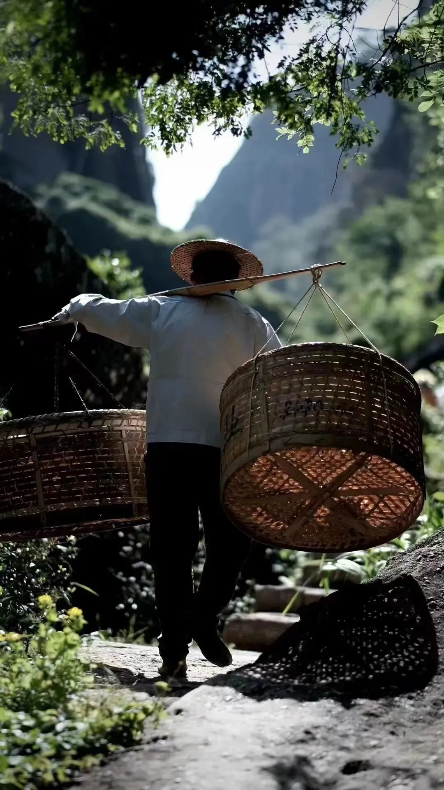
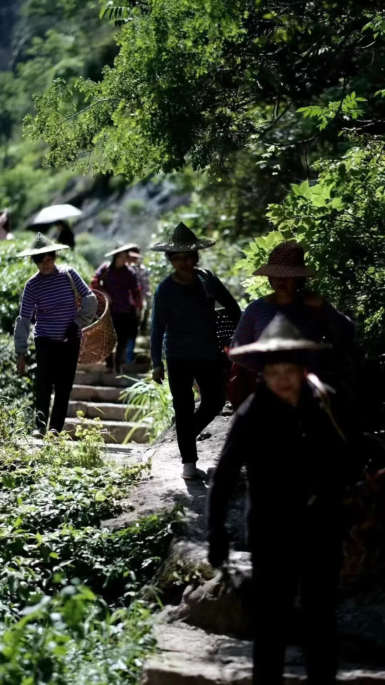
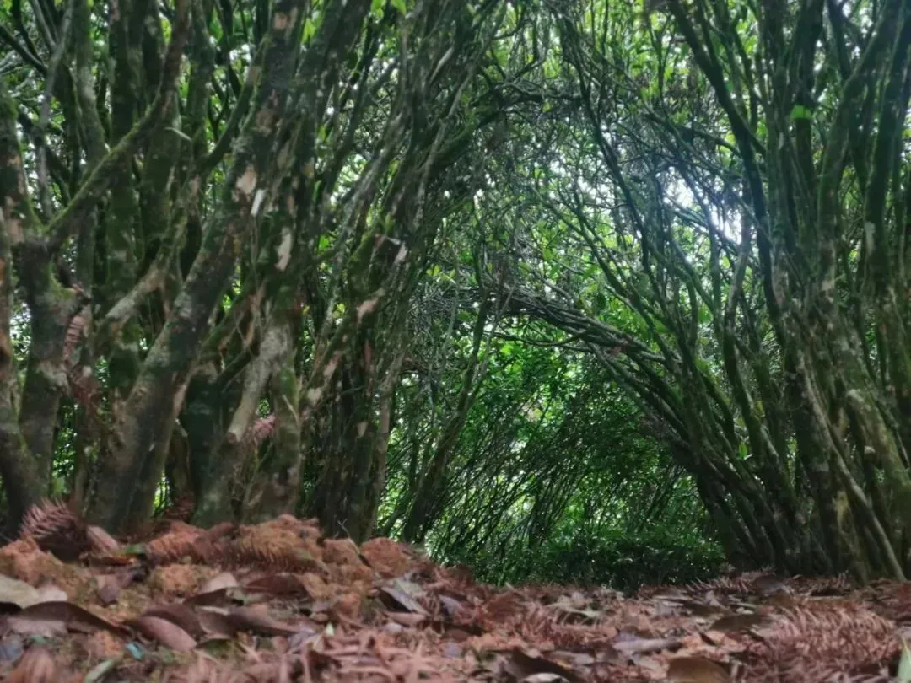
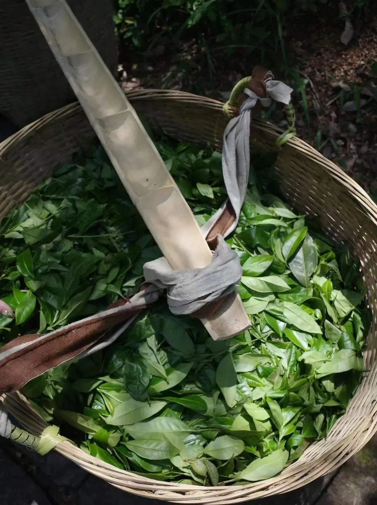
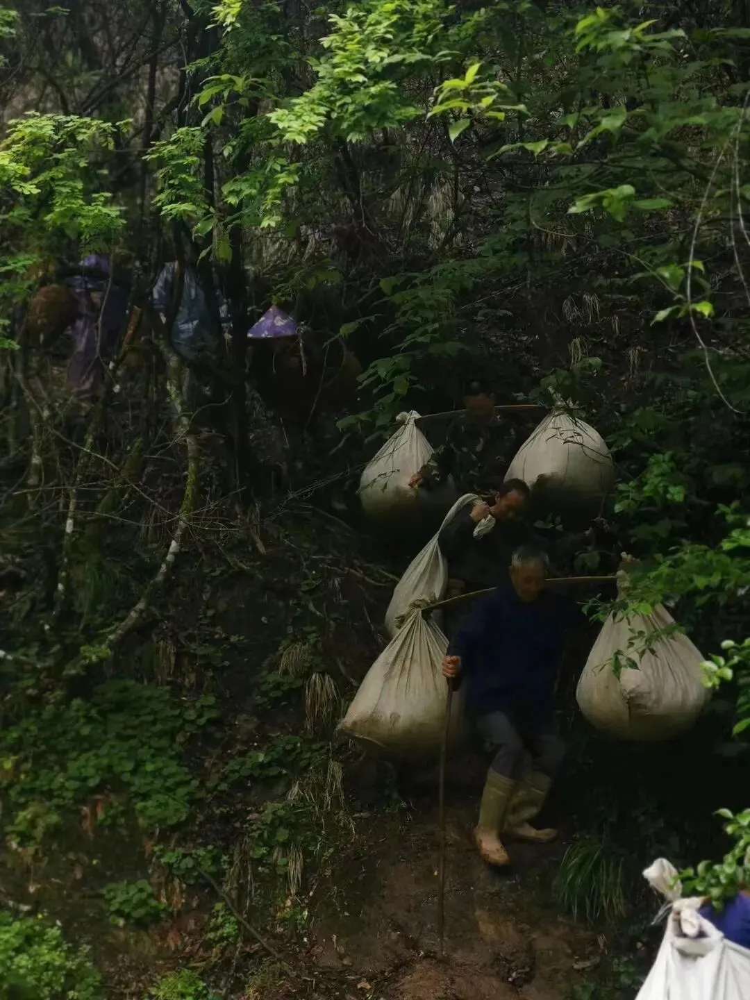

粪坑里出不了白莲花
五一假期结束后， 抓紧 更新一篇， 以免 被大家 认为我 偷懒，虽然 我确实偷懒 了
NO. 1｜壹
安居客、58同城发布的《2023年青年置业报告》称，68.5%青年拥有可以支付30%及以上首付的存款，74.7%倾向于购买新房。
不了解的人，可能会以为又是哪个媒体出来造谣了。
在动车上，记者随机采访了几位旅客:今年你们都买到票了吗？“买到了”，“买到了”，“我也买到了”。今年大家都买到了回家的车票......
这报告，是在售楼部里做的数据收集吧？让人忍不住想调侃：经过调查，进了厕所的人，有90%的人，准备在五分钟内排泄。
但认真一看， 原来是安居客和58同城发布的报告，那没事了 。读者中地产从业者较多，不需要过多解释这俩货是什么玩意。
个人对58同城和安居客没啥好感，这是个虚假信息发布平台,、垃圾广告聚集地，房源基本上假的多，真的少。
怎么说呢，这两平台，是我连查看房价数据时， 都默认排除的选项。
就这样的平台发布的置业报告，能有啥参考意义？
粪坑里长不出白莲花。
但能在这引起我们的吐槽，对它们来说，也是一种胜利，毕竟可以白嫖一大把流量。
如果你非要很直白地问我，这两平台的使用感，在不用“垃圾”这个词的前提下，只能说离谱程度不亚于：
萧何月下追韩信，都能被它俩说成是私奔了。
NO. 2｜贰
三天前， 佳源国际 被香港法院颁布清盘令。起因是去年一笔美元债逾期。
个人对佳源国际这家房企，没啥好印象，也写过很多次了，销售额大幅度造假注水、擅长在资本市场割韭菜。
有今天这个局面，一点也不意外，做局的人，既然有收割别人的行为，就得经受得起别人的反击。 不能只 吃肉时 ，大呼过瘾 ； 在 被揍时 ， 哭爹喊娘 。
... ...
大发地产 宣布违约，公告称尚未支付2023年4月一笔美元债1亿美元本金及利息。
大发也是几年前吹得比较猛的，用力过度的房企之一。写过，和佳源一样，都是天机榜上的房企。
合景泰富 公告称，拖欠银行及其他借贷的本金总额2.12亿元，没能在预定还款日期偿还，触发了其他银行等金融机构的风控，共311.63亿元借贷，须按要求偿还。
... ...
百强房企4月份销售额环比下降17.4%；今年前4月，80家典型房企融资总量同比下降23%
“楼市回暖”这个话题，仍持续在点状回暖状态，区域和城市之间的分化仍在持续。房企的融资情况依然不容乐观，融资难，仍是大部分民营房企不得面对的挑战，
而面对当前的经济形势，通过加大印钞机马力，持续不断给银行输送流动性，增加贷款人的放款意愿，并不能切实增加老百姓的购房意愿。
长期以来，政府依靠土地创造信用进而形成财政收入，并利用这一套加杠杆模式大力发展经济，已经形成路径依赖。
但当下的宏观背景，貌似已经不太支持该路径能持续有效地走下去。
所以我们能看到很魔幻、很撕裂的一幕：一方面是居民负债率持续攀升，逾期率也在持续攀升；另一方面是居民存款不断增加，但中长期贷款（房贷为主）增幅有限。
当下的货币扩张政策并未实质性刺激房地产业回暖，短期内无法改变房地产买方市场主导的局面。
从“房住不炒”来看， 房子砸在普通人手里，是软着陆；砸在金融机构、开发商、银行手里，就是硬着陆 。
NO. 3｜叁
现在房企会公告称自己亏损多少亿，几十亿、几百亿。
我已经慢慢不看那些乱七八糟的美化数据了，直奔“计提减值”。
过去几年，房企虚增资产是普遍现象，现在趁着楼市行情糟糕，大多会以“计提减值”的方式直接洗干净财报。
你们可以细看一下财报，很多都是以这项来进行操作，利润造假后虚增的资产，可以通过“资产减值准则”合法地洗掉。
这样一来，资产减值准则实际上起到了保护财务造假的作用。
资产减值损失里面往往隐藏着企业的很多秘密。通常来说，资产减值损失越大，表明企业的资产质量越差；反之，资产减值损失越小，表明企业的资产质量越好。
财报洗干净了，就可以重新开始新一轮的循环。用李云龙的话来说，就是：要不，老子用意大利炮送你去投胎，我们好重头来过。
... ...
在武夷山呆了好几天，这日子充实得，让人想在这住下来。
白天上山采茶，坐着快乐的突突车（三轮摩托），嘴里哼着：骑着我心爱的小摩托，它永远也不会堵车。
再步行走过很长一段弯弯曲曲的山间小路，就到了采茶的地方。





晚上和大师熬夜制茶，偶尔通宵（制茶的大师傅经常通宵做茶，我熬不住，只能偶尔），增益许多。
傍晚六点左右，还可以去河里游个泳、抓鱼、摸螺。
看着河里的鱼，同一胎生出来无数的小鱼，里面有的长得大，有的长得小，有还没长大就成了别人的食物；
上山时，看大树撒种，有的掉在高地，阳光充足长成参天大树；有的掉在湿地，成了淤泥，有的掉在缝隙中，也能长成一棵大树......
生命之神奇，无处不在。
很多时候，我们 痛苦的根源，除了环境，还有欲望：我不服、不甘心、凭什么、别人怎样怎样。
但是社会是专治各种不服。其实 不需要那么累，没有那么多宏大叙事，安心过好自己的日子就行。
去经历，无需畏惧，别遗憾，反正这世界，我们只来这一次。
按日期浏览全部来源（同日按条目标识排序）